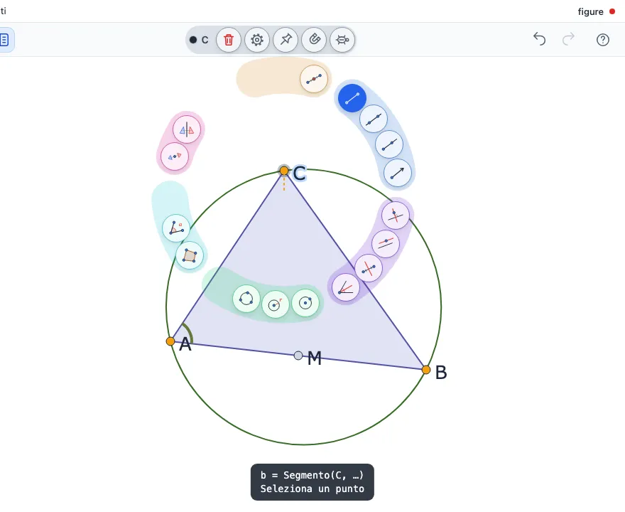

Costruire con i gesti
Toccare la figura
| Punto toccato | Risultato |
|---|---|
| uno spazio vuoto | punto libero (sul pavimento z = 0 in 3D) |
| vicino a un incrocio | intersezione dei due oggetti, che brillano al passaggio del puntatore (entro 24 px) |
| un oggetto | selezione e anello dei suoi strumenti |
| uno spazio vuoto, con l’anello aperto | chiusura dell’anello, senza creare punti |
| un oggetto, con la tavolozza aperta | selezione senza anello: la tavolozza mostra i suoi strumenti |
Un testo, un’espressione o uno slider vengono solo selezionati: non hanno anello.
L’anello degli strumenti

L’anello mostra solo gli strumenti applicabili all’oggetto toccato. Ogni strumento occupa sempre lo stesso posto; uno strumento non applicabile lascia il suo posto vuoto. Famiglie, in senso orario dall’alto:
| Famiglia | Strumenti |
|---|---|
| Punti | punto su oggetto, intersezione, punto medio o centro |
| Rette | segmento, retta, semiretta, vettore |
| Costruzioni | perpendicolare, parallela, asse del segmento, bisettrice |
| Circonferenze | centro e punto, centro e raggio, tre punti, sfera (3D) |
| Poligoni, angoli, luoghi | poligono, angolo, luogo |
| Trasformazioni | simmetrie centrale e assiale, di un punto o di un oggetto (poligono, circonferenza…) |
Passare con il puntatore su uno strumento mostra nel
suggerimento la riga che scriverà e l’argomento atteso:
b = Segmento(C, …), «Seleziona un punto». Le azioni
sull’oggetto stesso (eliminare, impostare…) sono nella
zona contestuale
della barra.
Selezionare gli argomenti
Scelto lo strumento, un’anteprima dell’oggetto segue il puntatore e gli oggetti accettati brillano al passaggio. Dove è atteso un punto, si seleziona a scelta un punto esistente, un oggetto (viene creato un punto su oggetto), un incrocio (viene creata un’intersezione) o uno spazio vuoto (viene creato un punto libero).
- Poligono: i vertici, poi di nuovo il primo. Trascinare un poligono i cui vertici sono punti liberi lo sposta in blocco, a meno che non sia fisso (Oggetto fisso nelle proprietà).
- Circonferenza (centro e raggio): creata con un clic, raggio di circa 150 px arrotondato a due cifre; trascinare la circonferenza cambia il raggio.
- Luogo: proposto su un punto che dipende da un punto su oggetto; creato con un clic.
- Angolo e bisettrice: un punto del primo lato, il vertice, un punto del secondo lato.
Casi particolari
- Oggetti sovrapposti: un menu dà la riga di ciascuno; passandoci sopra l’oggetto brilla. Un punto ha sempre la precedenza, e un incrocio dà direttamente l’intersezione.
- Con il dito: durante uno strumento, il dito appoggiato mostra l’anteprima senza spostare nulla e seleziona al sollevamento. Si può premere l’icona e scivolare fino al bersaglio con un solo gesto.
- Bordo della finestra: l’anello si sposta per restare intero, collegato all’oggetto da una linea tratteggiata; segue l’oggetto se la figura si muove.
- Abbandonare: Esc o la ✕ del suggerimento.
- Spostare: durante uno strumento, trascinare serve a mirare; il tasto destro sposta sempre oggetti e vista.